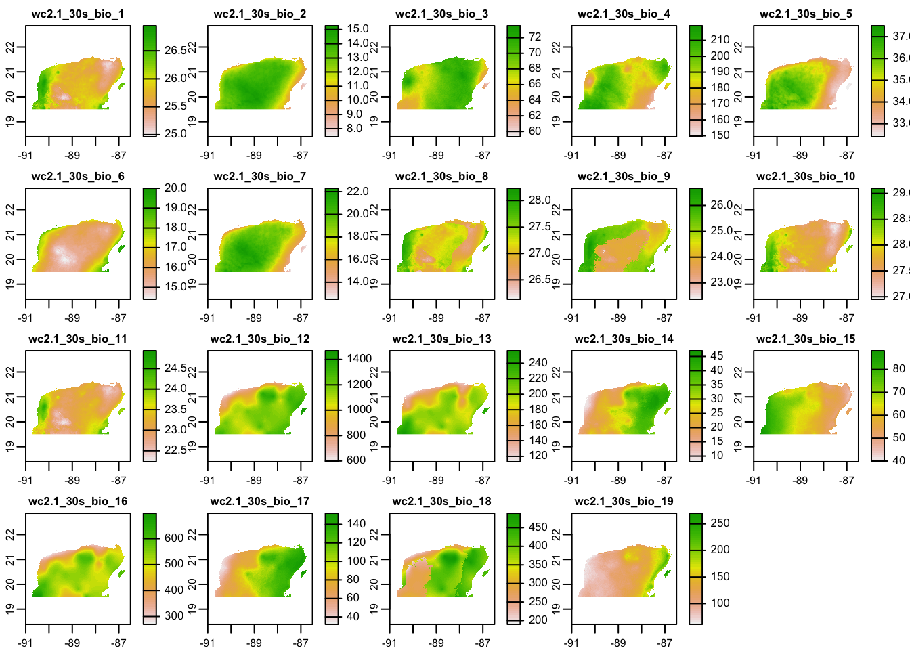
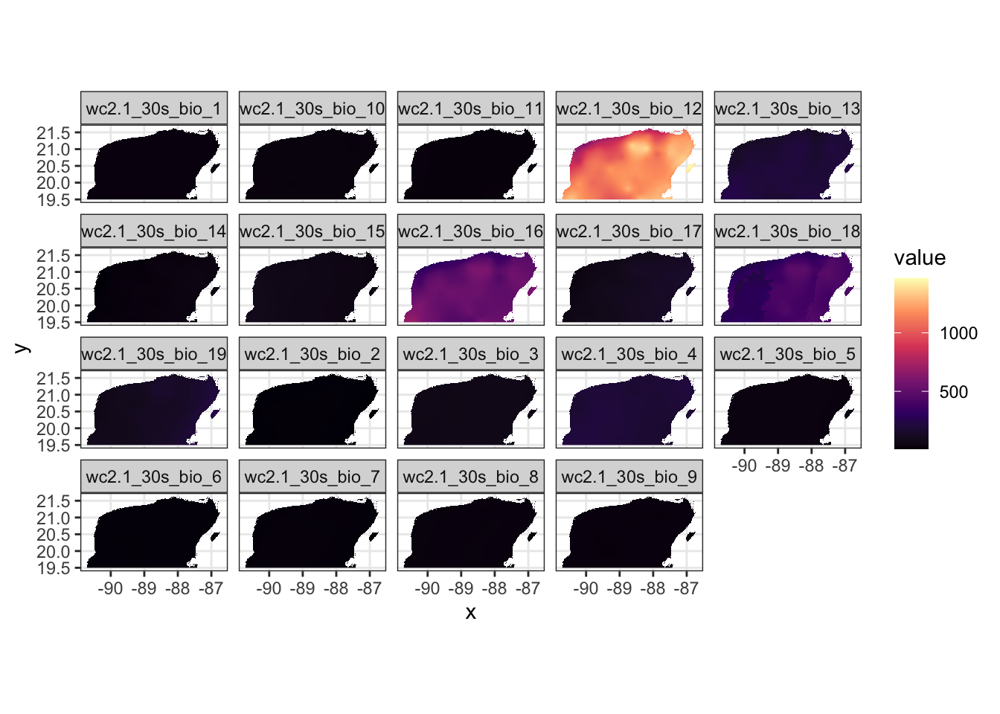

Session 6 Handling and Visualizing Spatial Data in R
In the previous session, Marius gave a very nice overview of environmental data, which is typically stored in raster form. He described properties of raster data and how to find data sets relevant to biological questions.
In this session we give an overview of how to handle spatial data in R. Our topics are:
- Handling raster data
- Some background on spatial vector data
- Handling vector data in R.
- Geometric operations on spatial data.
- Plotting spatial data.
Let’s load the main libraries that we will use for this session:
library(tidyverse)
library(terra)
library(sf)6.1 Handling Spatial Rasters in R
Regardless of where an environmental data set comes from, if it is stored as a spatial raster it can be read into R and manipulated as an R object.
Today, the main package for handling raster data in R is ‘terra.’
I have stored a few small raster data sets showing parts of the Yucatán Peninsula in this repository for examples. This section provides some details about how these small data sets were obtained.
6.1.1 Reading and Printing Raster Data
Let us read in two different raster data sets. The first shows average maximum temperature across space around the Yucatán Peninsula in each of the twelve months, and the second shows the values of different BioClim bioclimatic variables over space.
We read them in using the rast() function from the ‘terra’ package:
yuc_tmax <- rast("data/spatial/worldclim/yp_tmax.tif")
yuc_bioc <- rast("data/spatial/worldclim/yp_bioc.tif")These are stored as SpatRaster objects. This is a particular class from
the ‘terra’ package. When we print them we see some relevant information
about them:
yuc_tmax## class : SpatRaster
## dimensions : 270, 540, 12 (nrow, ncol, nlyr)
## resolution : 0.008333, 0.008333 (x, y)
## extent : -91, -86.5, 19.5, 21.75 (xmin, xmax, ymin, ymax)
## coord. ref. : lon/lat WGS 84 (EPSG:4326)
## source : yp_tmax.tif
## names : MEX_1, MEX_2, MEX_3, MEX_4, MEX_5, MEX_6, ...
## min values : 27.2, 27.9, 29.0, 30.4, 31.6, 31.9, ...
## max values : 31.2, 32.4, 34.7, 36.6, 37.5, 35.3, ...Or
yuc_bioc## class : SpatRaster
## dimensions : 270, 540, 19 (nrow, ncol, nlyr)
## resolution : 0.008333, 0.008333 (x, y)
## extent : -91, -86.5, 19.5, 21.75 (xmin, xmax, ymin, ymax)
## coord. ref. : lon/lat WGS 84 (EPSG:4326)
## source : yp_bioc.tif
## names : wc2.1~bio_1, wc2.1~bio_2, wc2.1~bio_3, wc2.1~bio_4, wc2.1~bio_5, wc2.1~bio_6, ...
## min values : 24.962, 7.425, 59.325, 149.395, 32.400, 14.400, ...
## max values : 26.95, 15.27, 73.53, 219.19, 37.50, 20.00, ...This output gives information about the parameters of environmental data that
Marius has just told us about: for example, the extent (extent) of the raster, the
coordinate reference system and projection (coord. ref.) and the resolution
(resolution) of the environmental data.
There are two lines that I want to emphasize, in particular.
dimensions : 270, 540, 12 (nrow, ncol, nlyr)This tells us the number of rows and columns in the raster, and also very importantly, tells us how many layers are in this SpatRaster object. In this case there are 12 layers, one for each month.
The line
names : MEX_1, MEX_2, MEX_3, MEX_4, MEX_5, MEX_6, ... Gives us the names for each layer.
There are many ways to manipulate SpatRaster objects. We won’t go into many, at this point, other than to say that you can extract specific layers like
yuc_tmax$MEX_10## class : SpatRaster
## dimensions : 270, 540, 1 (nrow, ncol, nlyr)
## resolution : 0.008333, 0.008333 (x, y)
## extent : -91, -86.5, 19.5, 21.75 (xmin, xmax, ymin, ymax)
## coord. ref. : lon/lat WGS 84 (EPSG:4326)
## source : yp_tmax.tif
## name : MEX_10
## min value : 30.4
## max value : 33.3For a great introduction to all the ways you can manipulation rasters with functions from the ‘terra’ package, see the ‘terra’ documentation at: https://rspatial.org/terra/spatial/index.html.
6.1.2 Plotting Raster Data with plot()
The easiest way to plot raster data, in order to get an overview of
the values in a raster, is to use the plot() function, which, if the
‘terra’ package is available, has a special set of methods for dealing
with SpatRaster objects.
This plot() function is optimized for raster data, and renders photos quite
quickly. It uses a default color scheme for the continuous numeric values
in each cell of the raster, and it plots each layer as a separate panel.
For example, let’s look at the maximum temperature data:
plot(yuc_tmax)
The 12 different panels here correspond to the twelve different layers in the
SpatRaster, each of these corresponding to one of the twelve months of
the year.
Take a moment to investigate those plots and ponder questions like:
- Where is it the coolest? Where it is the warmest?
- Which month appears to have the most/least variation in temperature across the Peninsula?
It is also worth plotting the BioClim data to see how much these bioclimatic variables differ across the Peninsula:
# Use maxnl == 20 to make sure all 19 layers are plotted
plot(yuc_bioc, maxnl = 20)
This is really cool to see! Especially for someone that is not super familiar with the Yucatán—there is a lot of biologically relevant climatic variation across the peninsula.
So, what do all these, bio_1 through bio_16 mean? They are defined as
follows:
- BIO1 = Annual Mean Temperature
- BIO2 = Mean Diurnal Range (Mean of monthly (max temp - min temp))
- BIO3 = Isothermality (BIO2/BIO7) (×100)
- BIO4 = Temperature Seasonality (standard deviation ×100)
- BIO5 = Max Temperature of Warmest Month
- BIO6 = Min Temperature of Coldest Month
- BIO7 = Temperature Annual Range (BIO5-BIO6)
- BIO8 = Mean Temperature of Wettest Quarter
- BIO9 = Mean Temperature of Driest Quarter
- BIO10 = Mean Temperature of Warmest Quarter
- BIO11 = Mean Temperature of Coldest Quarter
- BIO12 = Annual Precipitation
- BIO13 = Precipitation of Wettest Month
- BIO14 = Precipitation of Driest Month
- BIO15 = Precipitation Seasonality (Coefficient of Variation)
- BIO16 = Precipitation of Wettest Quarter
- BIO17 = Precipitation of Driest Quarter
- BIO18 = Precipitation of Warmest Quarter
- BIO19 = Precipitation of Coldest Quarter
So, this is really neat. You can very quickly see that, although there is not a huge amount of temperature variation, there is quite a bit of variation in precipitation across the peninsula.
6.1.3 Plotting raster data with ggplot2
ggplot only knows how to plot data that are stored in data frames
or tibbles. This means that you cannot hand it a SpatRaster object
directly for plotting.
There is some support for ggplot from the authors of the ‘terra’ package, in a package called ‘rasterVis.’ This doesn’t seem quite ready for prime time yet (i.e., the version on CRAN has some bugs in it.)
Alternatively, if you have very large rasters with colors defined by levels of red, blue, and green, there are fast alternatives to include those within ggplot (See CH’s session next!)
Otherwise, the simplest approach to getting all the features of ggplot
for plotting rasters is just to convert the information in the raster to
a data frame. This can be done with as.data.frame(), as described
by the help information at ?terra::as.data.frame().
When applied to a SpatRaster object, as.data.frame() creates a column in a
data frame for every layer of the raster. If you, additionally, set
xy = TRUE, then the center coordinates of each raster cell are included
in that data frame.
Thus, we can make a tibble out of a raster and then put everything into four columns, such that it is easy for ggplot to handle it:
yuc_bioc_tib <- as.data.frame(
yuc_bioc,
xy = TRUE
) %>%
as_tibble() %>%
pivot_longer(
cols = -c(x, y),
names_to = "layer",
values_to = "value"
)
# see what that looks like:
yuc_bioc_tib## # A tibble: 1,718,455 × 4
## x y layer value
## <dbl> <dbl> <chr> <dbl>
## 1 -88.1 21.6 wc2.1_30s_bio_1 25.7
## 2 -88.1 21.6 wc2.1_30s_bio_2 11.1
## 3 -88.1 21.6 wc2.1_30s_bio_3 70.6
## 4 -88.1 21.6 wc2.1_30s_bio_4 179.
## 5 -88.1 21.6 wc2.1_30s_bio_5 33
## 6 -88.1 21.6 wc2.1_30s_bio_6 17.3
## 7 -88.1 21.6 wc2.1_30s_bio_7 15.7
## 8 -88.1 21.6 wc2.1_30s_bio_8 27.0
## 9 -88.1 21.6 wc2.1_30s_bio_9 24.9
## 10 -88.1 21.6 wc2.1_30s_bio_10 27.5
## # … with 1,718,445 more rowsIn that format, ggplot knows just what do do with it, and you can plot it quite easily. First, let’s just plot one of the variables, BIO_1:
yuc_bioc_tib %>%
filter(layer == "wc2.1_30s_bio_1") %>%
ggplot(aes(x = x, y = y, fill = value)) +
scale_fill_viridis_c(option = "magma") +
geom_raster() +
theme_bw() +
coord_sf() # here, this maintains the aspect ratio
One important thing to note: if you want to plot all the different bioclim variables in ggplot using faceting, there is a problem — the colors will apply to the whole range of possible values, so that most won’t show up well. This is especially obvious with the bioclim variables which are on totally different scales:
ggplot(yuc_bioc_tib, aes(x = x, y = y, fill = value)) +
scale_fill_viridis_c(option = "magma") +
geom_raster() +
theme_bw() +
coord_sf() +
facet_wrap(~layer, ncol = 5)Ha! That looks terrible.
On the other hand, if every layer is plotting the same variable, then it can be quite advantageous to have the same color bar for all layers. For example, when looking at the maximum temperature each month, it is actually better to have the same colour scale for all plots:
# get a tibble of the tmax values
yuc_tmax_tib <- as.data.frame(
yuc_tmax,
xy = TRUE
) %>%
as_tibble() %>%
pivot_longer(
cols = -c(x, y),
names_to = "layer",
values_to = "value"
) %>%
mutate(
# here make a factor of them so they came out in the
# right order
layer_f = factor(layer, levels = unique(layer))
)
# plot them
ggplot(yuc_tmax_tib, aes(x = x, y = y, fill = value)) +
scale_fill_viridis_c(option = "magma") +
geom_raster() +
theme_bw() +
coord_sf() +
facet_wrap(~layer_f, ncol = 3)That makes it a lot easier to see the annual variation in maximum temperature.
6.1.3.1 Quickly back to ’terra’s plot() function
It is worth noting that a similar effect can be achieved by setting the
range in terra’s plot() function:
plot(yuc_tmax, range = c(27,38))
In summary, the plot() function from the terra package is fast and efficient
for plotting rasters. However, if you are more comfortable making plots with
‘ggplot2,’ you can use that for plotting rasters, but you need to
convert the raster to a data frame.
6.2 Vector Spatial Data
Raster data consist of a whole grid of cells or pixels. In this way, they are very much like a digital photograph, or a JPG. When you zoom in on a raster, things get pixelated, just like a digital photograph.
Contrast this to when you zoom in on the text of a PDF file. The edges of the letters stay smooth even at very high values of zoom. That is because those letters are not defined by lots of pixels (some white and some black), but rather, by a vector specification of the curves or lines that make up each letter.
Spatial data has such an analogue known as vector spatial data. This type of spatial data is not defined in a series of cells, but rather in terms of a number of different points.
This can be much more efficient for storing spatial features that are lines or boundaries. For example, two points in space can define a single line, which will not grow “fuzzy” when you zoom in on it.
Vector spatial data is particularly appropriate for representing things like country boundaries, rivers, coastlines, the shorelines of lakes, highways and roads, and points in space (for example, sampling locations of birds, etc.)
6.2.1 Vector data features
There are three main basic types of vector spatial data features:
- Points: simply points on the landscape. (Like sampling locations.)
- Linestrings: lines connecting a series of points (good for rivers or highways, etc.)
- Polygons: lines connecting a series of points that eventually come back to themselves to create a closed shape. (good for state boundaries, lakes, coastlines, etc.).
Polygons can be quite complex, as they may include holes (like a donut!), but, for the most part, those complexities can remain hidden from you, the R user.
6.2.2 Shapefiles
The most typical format for storing vector spatial data is the Shapefile, which is commonly used for GIS programs, like ArcView.
A shapefile has the extension .shp and is a binary format describing the
vector data. It is not human readable.
Typically, along with the shapefile will be a number of other files with the
same first part of their name, but with different extensions, like
.shx, .dbf, .prj.
For example, this course repository has a shapefile for the Mexican states
in the directory data/spatial/ne_mexico_states whose contents look like:
ne_mexico_states/
├── ne_mexico_states.dbf
├── ne_mexico_states.prj
├── ne_mexico_states.shp
└── ne_mexico_states.shxIt is worth pointing out that the .prj file contains information about the
projection of the points, and .dbf file contains data that correspond to
each of the geographic features in the shapefile.
This section provides some details about how the Mexican states shapefile was obtained.
6.2.3 Spatial vector data in R
There are a few different packages for handling spatial vector data in R.
‘terra’ can deal with it.
However, I am particularly fond of the package ‘sf,’ which implements simple features for R. Simple features is a defined standard for representing spatial data.
The sf package stores spatial vector data in a special kind of data
frame that has any number of columns that represent data specific
to each row, and then a special list-column that contains the geometry
associated with the row. This geometry is just a series of points
that define points, linestings, or polygons, or collections of
multiple points, linestrings, or polygons.
All the functions in the ‘sf’ package start with st_.
Excellent introductory documentation for ‘sf’ is available at https://r-spatial.github.io/sf/articles/sf1.html, and they have a great cheat sheet for the package too:

6.2.4 An example: Mexican states
We can use the st_read() function to read in a shapefile of Mexican states.
mex_states <- st_read("data/spatial/ne_mexico_states/ne_mexico_states.shp")## Reading layer `ne_mexico_states' from data source
## `/Users/eriq/Documents/git-repos/merida-workshop-2022/data/spatial/ne_mexico_states/ne_mexico_states.shp'
## using driver `ESRI Shapefile'
## Simple feature collection with 33 features and 83 fields
## Geometry type: MULTIPOLYGON
## Dimension: XY
## Bounding box: xmin: -118.4 ymin: 14.55 xmax: -86.7 ymax: 32.71
## Geodetic CRS: GCS_unknownIt turns out that there are a lot of columns in that result. To make it easier to
look at, let’s just look at just a few of the columns. We can do all the typical
tidyverse operations on this object, so we use select() to get a few columns,
and we make sure we get the geometry column, which has the spatial information in it!
ms_thin <- mex_states %>%
select(
name,
type,
type_en,
postal,
geometry
)
ms_thin## Simple feature collection with 33 features and 4 fields
## Geometry type: MULTIPOLYGON
## Dimension: XY
## Bounding box: xmin: -118.4 ymin: 14.55 xmax: -86.7 ymax: 32.71
## Geodetic CRS: GCS_unknown
## First 10 features:
## name type type_en postal
## 1 Sonora Estado State SO
## 2 Baja California Estado State BC
## 3 Chihuahua Estado State CH
## 4 Coahuila Estado State CO
## 5 Tamaulipas Estado State TM
## 6 Nuevo León Estado State NL
## 7 Quintana Roo Estado State QR
## 8 Campeche Estado State CM
## 9 Tabasco Estado State TB
## 10 Chiapas Estado State CS
## geometry
## 1 MULTIPOLYGON (((-114.8 32.5...
## 2 MULTIPOLYGON (((-114.7 32.7...
## 3 MULTIPOLYGON (((-109 31.33,...
## 4 MULTIPOLYGON (((-103.3 29.0...
## 5 MULTIPOLYGON (((-99.71 27.6...
## 6 MULTIPOLYGON (((-99.81 27.7...
## 7 MULTIPOLYGON (((-88.3 18.48...
## 8 MULTIPOLYGON (((-89.15 17.9...
## 9 MULTIPOLYGON (((-90.99 17.8...
## 10 MULTIPOLYGON (((-91.43 17.2...Here, we see that each state takes up 1 row, and the state boundary is stored as a series of points in a “MULTIPOLYGON” sf data structure.
6.2.5 Plotting simple features with ggplot()
The authors of the ‘sf’ package worked with Hadley Wickham to provide
the geom_sf() function to plot simple feature objects. The geom_sf()
object does not require that aesthetics for x and y be set, because it
uses the geometry information directly.
For example, we can plot the boundaries of the Mexican states like this:
ggplot(data = ms_thin) +
geom_sf(fill = NA) +
theme_bw() +
coord_sf()Note that we can also map aesthetics like fill or color to different values in the simple features data frame:
ggplot(data = ms_thin) +
geom_sf(aes(fill = name)) +
theme_bw() +
coord_sf()
6.2.6 A word about coord_sf()
The coord_sf() function let’s you define the coordinate
system for plotting sf objects. By default, it plots
a planar system of longitude and latitude, but it also
accepts different projections with its crs argument.
Using a different crs will reproject any simple features data from whatever coordinate
reference system them are in to the new one.
For example, we can plot the Mexican states using a Lambert Conformal Conic (LCC) projection, like this:
# define the projection with this long string
mex_lcc <- "+proj=lcc +lat_1=20 +lat_2=60 +lat_0=40 +lon_0=-102 +x_0=0 +y_0=0 +ellps=GRS80 +datum=NAD83 +units=m no_defs"
# pass that string as the `crs` argument to coord_sf()
ggplot(data = ms_thin) +
geom_sf(aes(fill = name)) +
theme_bw() +
coord_sf(crs = mex_lcc)Note how the latitude lines are curved after projection.
6.2.7 A word about resolution of spatial vector data
You can zoom in indefinitely on vector defined fonts (like in a PDF file) because the curves that make up the letter are defined by equations.
That is not the case with most spatial vector data. Rather, spatial objects are defined by the points within them.
Landforms are not perfectly straight lines, nor can they be represented by simple equations. In fact, landforms have a fractal nature. So, the number of points used to represent a shape (like a coastline) in space determines its resolution.
We can demonstrate this by viewing the northern Yucatán coastline at different resolutions. I previously downloaded Natural Earth Data maps of different resolutions (details here)

Thus, spatial vector data still have a resolution, which is determined by how many points are available to represent curvy lines.
If you are plotting maps of the entire world, low resolution works fine. If you are making maps of smaller areas, then higher resolution is needed.
For very fine scale coastlines, you can use the U.S. National Oceanic and Atmospheric Administration’s Global Self-consistent, Hierarchical, High-resolution Geography Database (GSHHG).
This is a very large data set, but clearly has much higher resolution:

In short, if you are working in small areas, then higher resolution sources are needed.
6.3 Yucatan Jay Occurrences
Today it is possible to collect a lot of data while using a GPS device. This gives you an unprecedented ability to collect georeferenced data.
In most cases, georeferenced data will correspond to samples that were collected at different points. In other words, they represent point data.
These data are almost always given as variables with a latitude and a longitude.
6.3.1 Example data set with Latitude and Longitude points
For an example of such data, I have downloaded 25,135 observations of the Yucatán Jay from the GBIF data set and saved it in the course repository.
It can be read in like this:
yjay_full <- read_tsv(
"data/spatial/Cyanocorax-yucatanicus.tsv.gz",
progress = FALSE,
show_col_types = FALSE
)## Warning: One or more parsing issues, see `problems()`
## for detailsThere are a lot of columns and rows in that. So, let’s make it a little smaller by selecting only a few columns, and limiting it to EBIRD observations from the year 2017.
yjay_thin <- yjay_full %>%
filter(
str_detect(collectionCode, "EBIRD"), # keep just the EBIRD-associated records
year == 2017 # from the year 2017
) %>%
select( # whittle it down to just a few columns of data
gbifID,
decimalLongitude,
decimalLatitude,
day,
month,
year,
individualCount,
stateProvince,
locality
)
# and look at the first few rows:
yjay_thin## # A tibble: 3,032 × 9
## gbifID decimalLongitude decimalLatitude day month
## <dbl> <dbl> <dbl> <dbl> <dbl>
## 1 3.30e9 -88.2 21.6 21 5
## 2 3.30e9 -87.0 20.7 30 9
## 3 3.29e9 -88.0 21.6 20 10
## 4 3.29e9 -87.0 20.8 12 12
## 5 3.29e9 -88.2 20.8 28 7
## 6 3.29e9 -87.4 20.2 24 2
## 7 3.29e9 -88.2 21.6 21 5
## 8 3.29e9 -87.7 18.7 20 11
## 9 3.29e9 -88.5 17.8 14 4
## 10 3.28e9 -87.9 21.4 5 5
## # … with 3,022 more rows, and 4 more variables:
## # year <dbl>, individualCount <dbl>,
## # stateProvince <chr>, locality <chr>6.3.2 Plotting Lat-Long data
If you have lat-long data, you can typically plot them with ggplot() simply as points,
using geom_point(), so long as your underlying maps and other spatial data
are all in a standard lat-long coordinate system.
The geographic coordinates from GBIF (the Yucatán Jay data) use the WGS84 standard,
which is the same as the coordinate reference system of ms_thin, as seen by:
st_crs(ms_thin)## Coordinate Reference System:
## User input: GCS_unknown
## wkt:
## GEOGCRS["GCS_unknown",
## DATUM["World Geodetic System 1984",
## ELLIPSOID["WGS 84",6378137,298.257223563,
## LENGTHUNIT["metre",1]],
## ID["EPSG",6326]],
## PRIMEM["Greenwich",0,
## ANGLEUNIT["Degree",0.0174532925199433]],
## CS[ellipsoidal,2],
## AXIS["longitude",east,
## ORDER[1],
## ANGLEUNIT["Degree",0.0174532925199433]],
## AXIS["latitude",north,
## ORDER[2],
## ANGLEUNIT["Degree",0.0174532925199433]]]Therefore, we can plot the Jay occurrence data like this:
ggplot() +
geom_sf( # getting the background map
data = ms_thin,
fill = NA
) +
geom_point( # placing the points
data = yjay_thin,
mapping = aes(x = decimalLongitude, y = decimalLatitude),
fill = "deepskyblue3",
shape = 21,
stroke = 0.2
) +
theme_bw() +
coord_sf()
6.3.3 But, geom_point() won’t work with Different Projections / Coordinate Reference Sysytems
If you try to plot these with the LCC project from above things don’t work out:
ggplot() +
geom_sf( # getting the background map
data = ms_thin,
fill = NA
) +
geom_point( # placing the points
data = yjay_thin,
mapping = aes(x = decimalLongitude, y = decimalLatitude),
fill = "deepskyblue3",
shape = 21,
stroke = 0.2
) +
theme_bw() +
coord_sf(crs = mex_lcc) # using projected coordinates!The points are nowhere to be found (Actually, I think that they are all piled up on top of one another where the single blue dot is visible!), because the x and y coordinates in an LCC projection are totally different than they are in WGS84!
This shows that if you want to do spatial things on georeferenced data that simply have lat-long coordinates, you need to make a spatial object out of those data and treat them as spatial objects.
Fortunately, that is fairly easy.
6.3.4 Turning something into a simple features object
The Jay data can be made an sf object by adding a geometry column to it.
This is done with st_as_sf():
yjay_sf <- yjay_thin %>%
st_as_sf(
coords = c( # tell it which columns have the latitude and longitude
"decimalLongitude",
"decimalLatitude"
),
crs = 4326 # this is the EPSG shorthand for WGS 84
)
# have a look at it:
yjay_sf## Simple feature collection with 3032 features and 7 fields
## Geometry type: POINT
## Dimension: XY
## Bounding box: xmin: -92.98 ymin: 16.94 xmax: -86.79 ymax: 21.61
## Geodetic CRS: WGS 84
## # A tibble: 3,032 × 8
## gbifID day month year individualCount
## * <dbl> <dbl> <dbl> <dbl> <dbl>
## 1 3297327310 21 5 2017 1
## 2 3295142622 30 9 2017 2
## 3 3291491655 20 10 2017 1
## 4 3291004959 12 12 2017 8
## 5 3289867554 28 7 2017 8
## 6 3289002522 24 2 2017 NA
## 7 3286797902 21 5 2017 2
## 8 3286393532 20 11 2017 6
## 9 3285803459 14 4 2017 2
## 10 3284777960 5 5 2017 1
## # … with 3,022 more rows, and 3 more variables:
## # stateProvince <chr>, locality <chr>,
## # geometry <POINT [°]>Now, that yjay_sf variable can be treated as a spatial object and plotted
with geom_sf() like this:
ggplot() +
geom_sf( # getting the background map
data = ms_thin,
fill = NA
) +
geom_sf( # placing the points as spatial objects
data = yjay_sf,
fill = "deepskyblue3",
shape = 21,
stroke = 0.2
) +
theme_bw() +
coord_sf(crs = mex_lcc) # using projected coordinates!That’s Nice!
Not only does treating these points as spatial objects let us plot it in different coordinate reference systems, but, it also allows us to to spatial geometric operations on them. Several examples of which we will show in the next section.
6.4 Geometric operations
The sf package supports a number of geometric operations. We will show just a
few of them here.
6.4.1 Spatial Intersection
One very powerful operation is a spatial intersection. These intersections can be quite complex, though intersecting point data with polygon data will lead simply to point data, so, for intersecting points, things are not terribly complex.
For example, what if we want to know which Mexican states each of these observed Yucatán Jays occurred in.
The GBIF data actually tells us that information in the stateProvice column, but let’s pretend for a
moment that we don’t have that information — only where they birds were caught:
yjay_just_coord <- yjay_sf %>%
select(gbifID, geometry)
# now, we just have the IDs and the positions of the observations
yjay_just_coord## Simple feature collection with 3032 features and 1 field
## Geometry type: POINT
## Dimension: XY
## Bounding box: xmin: -92.98 ymin: 16.94 xmax: -86.79 ymax: 21.61
## Geodetic CRS: WGS 84
## # A tibble: 3,032 × 2
## gbifID geometry
## <dbl> <POINT [°]>
## 1 3297327310 (-88.23 21.55)
## 2 3295142622 (-87.03 20.67)
## 3 3291491655 (-87.98 21.58)
## 4 3291004959 (-86.96 20.77)
## 5 3289867554 (-88.21 20.76)
## 6 3289002522 (-87.43 20.21)
## 7 3286797902 (-88.23 21.55)
## 8 3286393532 (-87.71 18.71)
## 9 3285803459 (-88.53 17.77)
## 10 3284777960 (-87.87 21.41)
## # … with 3,022 more rowsSo, if that was all we knew, and we wanted to figure out which states all those birds were observed in, we would intersect the location of each observation with the polygons that define the states.
jays_in_states <- st_intersection(
yjay_just_coord, # this requires the spatial object that we made
ms_thin
)## Warning: attribute variables are assumed to be
## spatially constant throughout all geometries# look at the result
jays_in_states## Simple feature collection with 2425 features and 5 fields
## Geometry type: POINT
## Dimension: XY
## Bounding box: xmin: -92.98 ymin: 17.94 xmax: -86.79 ymax: 21.59
## Geodetic CRS: WGS 84
## # A tibble: 2,425 × 6
## gbifID name type type_en postal
## * <dbl> <chr> <chr> <chr> <chr>
## 1 3295142622 Quintana Roo Estado State QR
## 2 3291004959 Quintana Roo Estado State QR
## 3 3286393532 Quintana Roo Estado State QR
## 4 3282675523 Quintana Roo Estado State QR
## 5 3281473008 Quintana Roo Estado State QR
## 6 3279106041 Quintana Roo Estado State QR
## 7 3277142270 Quintana Roo Estado State QR
## 8 3275579212 Quintana Roo Estado State QR
## 9 3273312480 Quintana Roo Estado State QR
## 10 3252526920 Quintana Roo Estado State QR
## # … with 2,415 more rows, and 1 more variable:
## # geometry <POINT [°]>No way! That is so cool! This new simple features tibble now has all the
birds that were seen in Mexico, and, for each one, it has added the columns
from the Mexican states data. So, we know for each bird, which state
(in the column name) is was found in.
Now, for example, if we wanted to plot these points and color them by stateProvince
we could do this:
ggplot() +
geom_sf( # getting the background map
data = ms_thin,
fill = NA
) +
geom_sf( # placing the points as spatial objects
data = jays_in_states,
mapping = aes(fill = name), # coloring by name column
shape = 21,
stroke = 0.2
) +
theme_bw() +
coord_sf(xlim = c(-95, -85), ylim = c(16, 23)) Cool!
6.4.2 Treat the result as a tibble
One very important thing to keep in mind is that a simple features collection works quite nicely within the tidyverse.
So, for example, if you wanted to retain only those observations of
jays that occurred in the state of Yucatàn, you can use a simple filter():
yuc_state_jays <- jays_in_states %>%
filter(name == "Yucatán")
# have a look:
yuc_state_jays## Simple feature collection with 1082 features and 5 fields
## Geometry type: POINT
## Dimension: XY
## Bounding box: xmin: -90.4 ymin: 19.99 xmax: -87.57 ymax: 21.59
## Geodetic CRS: WGS 84
## # A tibble: 1,082 × 6
## gbifID name type type_en postal
## * <dbl> <chr> <chr> <chr> <chr>
## 1 3297327310 Yucatán Estado State YU
## 2 3291491655 Yucatán Estado State YU
## 3 3289867554 Yucatán Estado State YU
## 4 3286797902 Yucatán Estado State YU
## 5 3284777960 Yucatán Estado State YU
## 6 3283999442 Yucatán Estado State YU
## 7 3243749415 Yucatán Estado State YU
## 8 3176970726 Yucatán Estado State YU
## 9 2795705902 Yucatán Estado State YU
## 10 2794893768 Yucatán Estado State YU
## # … with 1,072 more rows, and 1 more variable:
## # geometry <POINT [°]>6.4.3 The same filtering can be done on the state polygons
By way of demonstration, we could also filter our data set of state boundaries to have just the state of Yucatán:
yuc_boundary <- ms_thin %>%
filter(name == "Yucatán")And then we could plot the two together quite easily:
ggplot() +
geom_sf(data = yuc_boundary) +
geom_sf(
data = yuc_state_jays,
fill = "deepskyblue3",
shape = 21,
stroke = 0.2
) +
theme_bw() +
coord_sf() +
ggtitle("Year 2017 EBIRD observations of YUJA in Yucatán state")6.5 Joint Operations with Raster and Vector data I: Masking a Raster with a Polygon
In the previous section, we saw an example of a geometric operation between two vector spatial features—the intersection between polygons and points.
Another class of important operations are those involving raster data and vector data.
Suppose that we want to make a plot of the BioClim variables that only includes the state of Yucatán.
The way this is typically done is to mask a raster using the shape of the polygon for the state of Yucatán.
The ‘terra’ package offers the mask() function for this operation.
You can think of it as a sort or intersection between the raster and the
polygon: all the raster cells inside the polygon stay the same avlue, and all the
rest get the value NA.
The function terra::mask() uses R’s S4 system for deciding how to behave.
Its first argument, x is a raster that you want to mask, and when its
second argument, mask, is of type SpatVector, it uses that SpatVector to
to mask the raster.
A SpatVector is a data type used by the package ‘terra.’ It can be thought of
as an alternative way of storing spatial vector data, and ‘sf’ objects (like
yuc_boundary) can be converted into a SpatVector using ’terra’s vect() function,
like vect(yuc_boundary).
Making a new raster by masking is as easy as:
yuc_masked_bioc <- mask(
x = yuc_bioc,
mask = vect(yuc_boundary)
)And we can plot that to see what it looks like:
plot(yuc_masked_bioc)6.6 Joint Operations with Raster and Vector data II: Extracting raster values at a set of spatial points
If you have sampled a boatload of birds across a large space, you might be interested in extracting environmental data from the locations where they were sampled. Understanding the environmental and climatic conditions where a species has been observed (versus where it is not found) forms the basis for niche modeling and other types of inference.
Thus, extracting values of a raster cell that contains an individual spatial point is an important task.
We will take a small example problem here: suppose that we wish to extract the
BioClim values at the point where every Yucatán Jay in yuc_state_jays was observed.
For this operation, we use the function extract() from the ‘terra’ package.
This also uses R’s S4 system of object orientiation. When you pass the extract() function
a SpatRaster as the first argument, and a SpatVector as the second argument, it returns the
values of the cells overlapped by the SpatVector. In the case of spatial points, this
returns a single value for each point.
Note that the ‘tidyr’ package also has a function called extract(), so it is wise to
always be explicit and use namespace addressing when you want ’terra’s extract() function,
i.e., call it terra::extract().
When deployed like this, extract() returns a data frame with one row for
each bird observation. We turn it into a tibble so it prints nicely:
terra::extract(yuc_bioc, vect(yuc_state_jays)) %>%
as_tibble()## # A tibble: 1,082 × 20
## ID wc2.1_30s_bio_1 wc2.1_30s_bio_2
## <dbl> <dbl> <dbl>
## 1 1 25.8 11.6
## 2 2 NaN NaN
## 3 3 25.8 14.0
## 4 4 25.8 11.6
## 5 5 25.5 13.0
## 6 6 25.8 14
## 7 7 25.6 11.6
## 8 8 25.5 14.1
## 9 9 26.0 13.2
## 10 10 26.0 13.2
## # … with 1,072 more rows, and 17 more variables:
## # wc2.1_30s_bio_3 <dbl>, wc2.1_30s_bio_4 <dbl>,
## # wc2.1_30s_bio_5 <dbl>, wc2.1_30s_bio_6 <dbl>,
## # wc2.1_30s_bio_7 <dbl>, wc2.1_30s_bio_8 <dbl>,
## # wc2.1_30s_bio_9 <dbl>, wc2.1_30s_bio_10 <dbl>,
## # wc2.1_30s_bio_11 <dbl>, wc2.1_30s_bio_12 <dbl>,
## # wc2.1_30s_bio_13 <dbl>, wc2.1_30s_bio_14 <dbl>, …If you wanted to insert those results seamlessly into the original simple features collection, with some nice tidyverse idioms, you could do like this:
jays_and_bioc <- yuc_state_jays %>%
bind_cols(terra::extract(yuc_bioc, vect(.)))
jays_and_bioc## Simple feature collection with 1082 features and 25 fields
## Geometry type: POINT
## Dimension: XY
## Bounding box: xmin: -90.4 ymin: 19.99 xmax: -87.57 ymax: 21.59
## Geodetic CRS: WGS 84
## # A tibble: 1,082 × 26
## gbifID name type type_en postal
## * <dbl> <chr> <chr> <chr> <chr>
## 1 3297327310 Yucatán Estado State YU
## 2 3291491655 Yucatán Estado State YU
## 3 3289867554 Yucatán Estado State YU
## 4 3286797902 Yucatán Estado State YU
## 5 3284777960 Yucatán Estado State YU
## 6 3283999442 Yucatán Estado State YU
## 7 3243749415 Yucatán Estado State YU
## 8 3176970726 Yucatán Estado State YU
## 9 2795705902 Yucatán Estado State YU
## 10 2794893768 Yucatán Estado State YU
## # … with 1,072 more rows, and 21 more variables:
## # geometry <POINT [°]>, ID <dbl>,
## # wc2.1_30s_bio_1 <dbl>, wc2.1_30s_bio_2 <dbl>,
## # wc2.1_30s_bio_3 <dbl>, wc2.1_30s_bio_4 <dbl>,
## # wc2.1_30s_bio_5 <dbl>, wc2.1_30s_bio_6 <dbl>,
## # wc2.1_30s_bio_7 <dbl>, wc2.1_30s_bio_8 <dbl>,
## # wc2.1_30s_bio_9 <dbl>, wc2.1_30s_bio_10 <dbl>, …6.7 Appendix: Obtaining and Reducing The Example Spatial Datasets
We don’t want our teaching repository to be too large, so I subsetted a few of our example data down to just the Yucatán region. The process for doing this with the different data sets is shown here.
6.7.1 Raster Data
To get the environmental data, I used the ‘geodata’ package, which
makes it easy to download the data sets. Unfortunately, my computer
is old enough that one of the security certificates on it does now
allow direct downloading via R of the datasets, but the error message
it gave told me the URL for the data set, and I could download it
with my browser, then read it in. I use namespace addressing
(i.e., package::function()) to be explicit about which package
each of the functions is in.
6.7.1.1 Worldclim Data
# get worldclim data for mexico at 0.5 minutes
# this fails for me on Mac Mojave because of a certification issue. Lame.
#mex_tmax <- geodata::worldclim_country(
# country = "Mexico",
# var = "tmax",
# res = 0.5,
# path = "/tmp"
#)
# the error from that showed me that the URL was:
# https://biogeo.ucdavis.edu/data/worldclim/v2.1/tiles/iso/MEX_wc2.1_30s_tmax.tif
mex_tmax <- terra::rast("~/Downloads/MEX_wc2.1_30s_tmax.tif")
# I used the same procedure to get the BioClim variables
mex_bioc <- terra::rast("~/Downloads/MEX_wc2.1_30s_bio.tif")Those rasters are very large. If we whittle it down to focus on
a smaller area, the files will be smaller. So, we focus only on the area
around the Yucatán Peninsula. To do this we define a latitude and
longitude extent, and then crop() the raster to that extent, using
functions from the ‘terra’ package.
# Here is the extent that includes the Yucatan Province.
# The ext() function can take lat/lon as
# xmin, xmax, ymin, ymax, as done here.
yp_extent <- terra::ext(c(-91, -86.5, 19.5, 21.75 ))
# now we crop the raster of all of Mexico down to just
# a small part.
yp_tmax <- crop(mex_tmax, yp_extent)
yp_bioc <- crop(mex_bioc, yp_extent)Finally, we save just that small Yucatán part of the raster in our repository here, so everyone can use it.
dir.create("data/spatial/worldclim", recursive = TRUE, showWarnings = FALSE)
writeRaster(yp_tmax, "data/spatial/worldclim/yp_tmax.tif", overwrite = TRUE)
writeRaster(yp_bioc, "data/spatial/worldclim/yp_bioc.tif", overwrite = TRUE)6.7.2 Vector data
6.7.2.1 Mexico State Boundaries
For polygons and lines for countries, states, coastlines, etc., a wonderful source is Natural Earth Data, a beautiful, consistent, and open-source set of vector (and raster) data for making beautiful maps.
There are several R packages that make it fairly easy to obtain the Natural Earth data. In paricular, ‘rnaturalearth’ and ‘rnaturalearthdata.’ I obtained polygon data for the different Mexican states/provinces with this command:
mex_states <- rnaturalearth::ne_states(
country = "mexico",
returnclass = "sf"
)That command returns the contents of the shapefile as a simple features object. Then we saved that to the repository as a shapefile.
dir.create("data/spatial/ne_mexico_states", recursive = TRUE, showWarnings = FALSE)
st_write(mex_states, dsn = "data/spatial/ne_mexico_states/ne_mexico_states.shp", append=FALSE)6.7.2.2 Yucatan coastline at different resolutions
# get coastline maps at different resolutions
sf_dat <- list(
res10 = rnaturalearth::ne_coastline(scale = 10, returnclass = "sf"),
res50 = rnaturalearth::ne_coastline(scale = 50, returnclass = "sf"),
res110 = rnaturalearth::ne_coastline(scale = 110, returnclass = "sf")
)
# now, crop each of those coastlines to the part we want
sf_cropped <- lapply(
sf_dat,
function(x) st_crop(
x,
c(xmin = -91, ymin = 19.5, xmax = -86.5, ymax = 21.75)
)
)
p10 <- ggplot(sf_cropped$res10) + geom_sf(fill = NA) + coord_sf() + ggtitle("High(ish) Res") + theme_bw()
p50 <- ggplot(sf_cropped$res50) + geom_sf(fill = NA) + coord_sf() + ggtitle("Medium Res") + theme_bw()
p110 <- ggplot(sf_cropped$res110) + geom_sf(fill = NA) + coord_sf() + ggtitle("Low Res") + theme_bw()
g <- cowplot::plot_grid(p110, p50, p10, nrow = 3)
ggsave(g, filename = "images/5.0/vector-resolutions.svg", width = 6, height = 11)
# Use the full-resolution GSHHG for comparison
gshhg_full <- st_read("~/Downloads/gshhg-shp-2.3.7/GSHHS_shp/f/GSHHS_f_L1.shp")
# remove a couple of invalid geometries
gshhg_clean <- gshhg_full %>%
filter(., st_is_valid(.))
# now, crop that
gshhg_cropped <- gshhg_clean %>%
st_crop(c(xmin = -91, ymin = 19.5, xmax = -86.5, ymax = 21.75))
# and plot it:
full <- ggplot(gshhg_cropped) +
geom_sf(fill = NA) +
coord_sf() +
ggtitle("GSHHG") +
theme_bw() +
annotate(
"rect",
xmin = -87.5,
xmax = -86.5,
ymin = 21.25,
ymax = 21.75,
colour = "red",
fill = NA
)
part <- ggplot(gshhg_cropped) +
geom_sf(fill = NA) +
coord_sf(
xlim = c(-87.5, -86.5),
ylim = c(21.25, 21.75)
) + ggtitle("GSHHG zoomed way in!") +
theme_bw()
g2 <- cowplot::plot_grid(full, part, nrow = 2)
ggsave(g2, filename = "images/5.0/gshhg.svg", width = 6, height = 8)6.7.2.3 Yucatán Municipality Boundaries
A quick web-search found an open-source data set with municipalies archived at New York University: https://archive.nyu.edu/bitstream/2451/37132/1/nyu_2451_37132.zip
This is a small file that I downloaded and then put into the
repo with the name yuc_municipio. It can be loaded like this:
yuc_muni <- st_read("data/spatial/yuc_municipio/yuc_municipio.shp")We didn’t end up using this in this session/notebook, but it is a fun data set if you want to play with it. Here is something to try: count up how many jay observations there were in each of the municipalities.
6.7.3 Species Occurrence Data
6.7.3.1 Yucatan Jay Occurrences
These data were download from https://www.gbif.org/ and
searched for the species “Yucatan Jay.” This returns one result which links to the
page for the data set. I downloaded in
and then gzipped it and saved it into data/spatial.